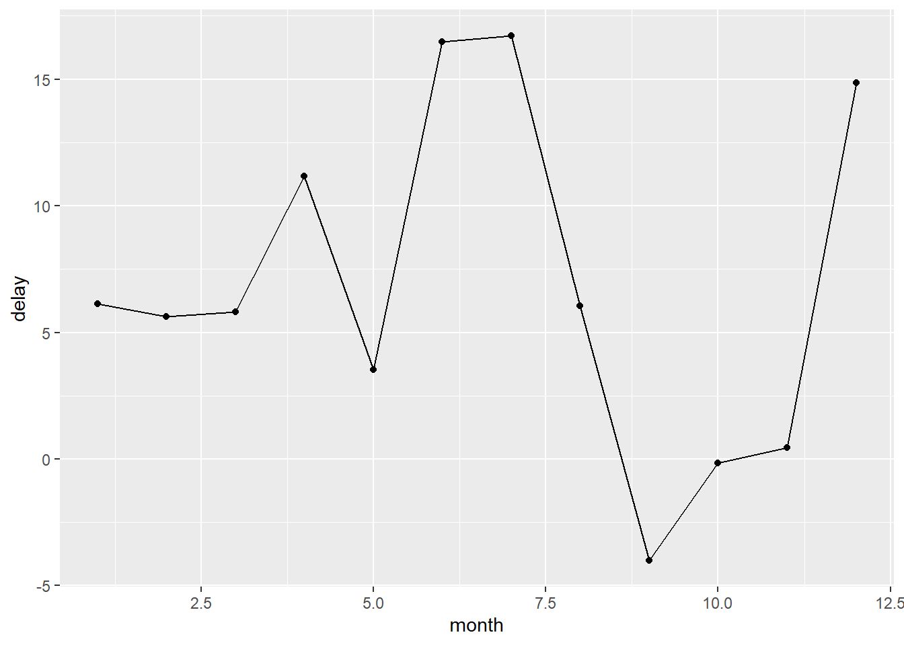
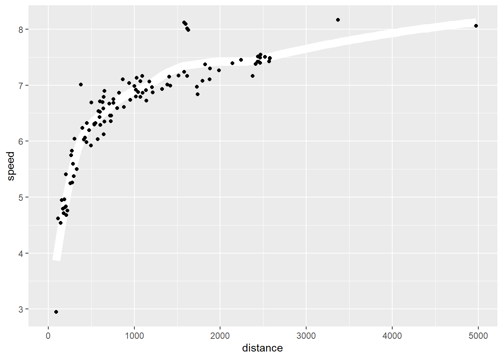

short_flights <- flights |>
filter(air_time <60)R4DS_Ch04_MyNotes
R for Data Science - Chapter 04 - My notes
Re-learning R and GitHub, while trying out Quarto.
Set-up
Packages
Add packages:
Load in Libraries:
Chapter 4: Workflow: code style
A consistent code style makes it easier to read code.
###Names
Names shold be lowercase, numbers, and “_” to seperate words.
Add spaces around mathematical operators but not parentheses:
flights |>
mutate(speed = distance / (air_time / 60))# A tibble: 336,776 × 20
year month day dep_time sched_dep_time dep_delay arr_time sched_arr_time
<int> <int> <int> <int> <int> <dbl> <int> <int>
1 2013 1 1 517 515 2 830 819
2 2013 1 1 533 529 4 850 830
3 2013 1 1 542 540 2 923 850
4 2013 1 1 544 545 -1 1004 1022
5 2013 1 1 554 600 -6 812 837
6 2013 1 1 554 558 -4 740 728
7 2013 1 1 555 600 -5 913 854
8 2013 1 1 557 600 -3 709 723
9 2013 1 1 557 600 -3 838 846
10 2013 1 1 558 600 -2 753 745
# ℹ 336,766 more rows
# ℹ 12 more variables: arr_delay <dbl>, carrier <chr>, flight <int>,
# tailnum <chr>, origin <chr>, dest <chr>, air_time <dbl>, distance <dbl>,
# hour <dbl>, minute <dbl>, time_hour <dttm>, speed <dbl>Add extra spaces to improve alignment:
#Use integer division (%/%) and remainder (%%) to deal with HHMM division
flights |>
mutate(
speed = distance / air_time,
dep_hour = dep_time %/% 100,
dep_minute = dep_time %% 100
)# A tibble: 336,776 × 22
year month day dep_time sched_dep_time dep_delay arr_time sched_arr_time
<int> <int> <int> <int> <int> <dbl> <int> <int>
1 2013 1 1 517 515 2 830 819
2 2013 1 1 533 529 4 850 830
3 2013 1 1 542 540 2 923 850
4 2013 1 1 544 545 -1 1004 1022
5 2013 1 1 554 600 -6 812 837
6 2013 1 1 554 558 -4 740 728
7 2013 1 1 555 600 -5 913 854
8 2013 1 1 557 600 -3 709 723
9 2013 1 1 557 600 -3 838 846
10 2013 1 1 558 600 -2 753 745
# ℹ 336,766 more rows
# ℹ 14 more variables: arr_delay <dbl>, carrier <chr>, flight <int>,
# tailnum <chr>, origin <chr>, dest <chr>, air_time <dbl>, distance <dbl>,
# hour <dbl>, minute <dbl>, time_hour <dttm>, speed <dbl>, dep_hour <dbl>,
# dep_minute <dbl>###Pipes
Pipes should have spaces around them and should typically be the last ting on a line:
flights |>
filter(!is.na(arr_delay), !is.na(tailnum)) |>
count(dest)# A tibble: 104 × 2
dest n
<chr> <int>
1 ABQ 254
2 ACK 264
3 ALB 418
4 ANC 8
5 ATL 16837
6 AUS 2411
7 AVL 261
8 BDL 412
9 BGR 358
10 BHM 269
# ℹ 94 more rowsIf a function has named arguements put each arguement on a seperate line. for each step of the pipeline, indent the line by 2 spaces:
flights |>
group_by(tailnum) |>
summarise(
delay = mean(arr_delay, na.rm = TRUE),
n = n()
)# A tibble: 4,044 × 3
tailnum delay n
<chr> <dbl> <int>
1 D942DN 31.5 4
2 N0EGMQ 9.98 371
3 N10156 12.7 153
4 N102UW 2.94 48
5 N103US -6.93 46
6 N104UW 1.80 47
7 N10575 20.7 289
8 N105UW -0.267 45
9 N107US -5.73 41
10 N108UW -1.25 60
# ℹ 4,034 more rows###ggplot2
Treat “+” the same way as a pipe:
flights |>
group_by(month) |>
summarise(
delay = mean(arr_delay, na.rm = TRUE)
) |>
ggplot(aes(x = month, y = delay)) +
geom_point() +
geom_line()
Equally, if all arguments don’t fit in a single line, place on separate lines:
flights |>
group_by(dest) |>
summarise(
distance = mean(distance),
speed = mean(distance / air_time, na.rm = TRUE)
) |>
ggplot(aes(x = distance, y = speed)) +
geom_smooth(
method = "loess",
span = 0.5,
se = FALSE,
color = "white",
linewidth = 4
) +
geom_point()`geom_smooth()` using formula = 'y ~ x'Warning: Removed 1 row containing non-finite outside the scale range
(`stat_smooth()`).Warning: Removed 1 row containing missing values or values outside the scale range
(`geom_point()`).
###Sectioning comments
Use sectioning comments to break up scripts as they get longer:
# Load data ----------------------------------------------------
# Plot data ----------------------------------------------------EXERCISES 1. Restyle the following pipelines following the guidelines above.
flights |>
filter(dest=="IAH") |>
group_by(
year,
month,
day
) |>
summarize(
n = n(),
delay = mean(arr_delay, na.rm=TRUE)
) |>
filter(n > 10)`summarise()` has grouped output by 'year', 'month'. You can override using the
`.groups` argument.# A tibble: 365 × 5
# Groups: year, month [12]
year month day n delay
<int> <int> <int> <int> <dbl>
1 2013 1 1 20 17.8
2 2013 1 2 20 7
3 2013 1 3 19 18.3
4 2013 1 4 20 -3.2
5 2013 1 5 13 20.2
6 2013 1 6 18 9.28
7 2013 1 7 19 -7.74
8 2013 1 8 19 7.79
9 2013 1 9 19 18.1
10 2013 1 10 19 6.68
# ℹ 355 more rowsflights |>
filter(
carrier == "UA",
dest %in% c("IAH", "HOU"),
sched_dep_time > 0900,
sched_arr_time < 2000
) |>
group_by(flight) |>
summarize(
delay = mean(arr_delay, na.rm=TRUE),
cancelled = sum(is.na(arr_delay)),
n = n()
) |>
filter(n > 10) # A tibble: 74 × 4
flight delay cancelled n
<int> <dbl> <int> <int>
1 53 12.5 2 18
2 112 14.1 0 14
3 205 -1.71 0 14
4 235 -5.36 0 14
5 255 -9.47 0 15
6 268 38.6 1 15
7 292 6.57 0 21
8 318 10.7 1 20
9 337 20.1 2 21
10 370 17.5 0 11
# ℹ 64 more rows